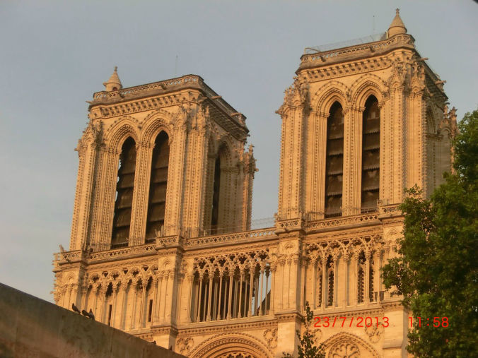

Notre Dame Cathedral

Inside of Cathedral
Notre Dame Cathedral
Inside of Cathedral
Europe is 2nd smallest continent having 10,180,000 sq-kilometer area. It is bordered by Arctic ocean at north, Atlantic ocean at west, Mediterranean Sea at south and Asia at east. Europe is divided into approximate 44 countries and about 10% of world population living in Europe.
Entry requirements: Travel to Europe is easy. Schengen VIsa allow visitor to visit almost all countries of Europe except United Kingdom, Ireland, Romania,Bulgaria, Croatia and USSR. Even no Visa is required to visit Schengen area of Europe for 62 countries situated outside Europe which include Australia, USA and Canada. United Kingdom also allow visa free entry for all countries of European Union and 62 countries outside Europe which include Australia, USA and Canada. For travel to Russia also Visa is required for citizen of most countries of the world except 62 countries. But list of 62 countries are different from the list of Schengen countries.
In near future (may be from end of 2022) some change in rule may occur for citizen of countries who are enjoying visa free entry in Europe. They may need to obtain ETIAS Visa Waiver through on-line application before entering Europe.
There is no border restriction among most of the European countries and convenient rail, road and air network, offer travelers easy access to most part of Europe.
Europe's history and beauty: The history and the beauty is hard to ignore when explaining the fascinating castles, and stories.
Thousands years of historical evidence from prehistoric edge to modern era are spread throughout Europe. Those become extremely attractive to general tourist as well as historian.
5200 years old prehistoric Newgrange Monument of Ireland, 4500 years old Stonehenge at England, about 2000 years old Ruins of Pompeii, The Colosseum and The Pantheon of Rome, The Acropolis at Greece, Germany's Imperial Baths, Baelo Claudia of Spain are few examples out of many famous historical evidence which are carrying tradition of ancient age of Europe.
At medieval age history of Europe are also equally attractive. Examples of few major tourist attractions of medieval age are The Leaning Tower of Pisa (Italy), The Alhambra of Spain, Tower of London which is also home to amazing display of royal armor and Crown Jewels.
Many palaces and monuments connected to modern era of Europe's history also become center of major tourists attraction. London's Westminster, Buckingham Palace, St. Paul's Cathedral, Palace of Versailles, Eiffel Tower, Notre Dame Cathedral of France, Plaza Mayor, Casa Mila of Spain, Germany's Brandenburg Gate, Fernsehturm, Trevi Fountain of Italy etc. are few examples.
In addition to that many famous museums are situated at various countries of Europe. Those Museums exhibit history of art, literature, culture and tradition of Europe and as well as changes with time.
Breath taking beauty of snow capped Alps range and Matterhorn peak, pink color water of Las Salinas de Torrevieja lake of Spain which is also home to thousands of flamingos during breeding season, Croatia's Plitviče Lakes National Park consists of 16 emerald color lake and countless waterfalls, fabulous black-pebble and red-sand beaches of Santorini at Greece, Amalfi the glamour of Italy’s most famous peninsula with its pastel-colored towns cascading down to the Mediterranean, cruising the Adriatic lagoon of Venice (Italy) by gondola, Iceland’s most iconic landmarks Kirkjufell which is famous place to see Northern Lights and consists of naturally beautiful freestanding mountain, surrounded by beaches, waterfalls, and many others amazingly beautiful scenic places of Europe make it dream places for nature lover tourists.
Palace of Versailles
Palace of West Minister